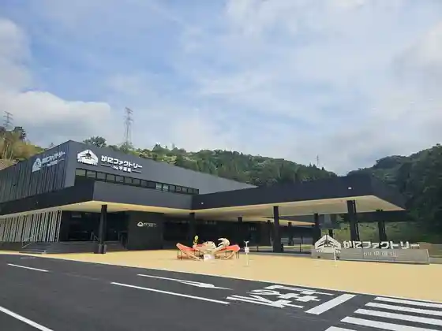
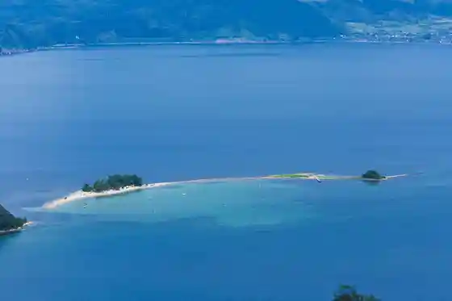
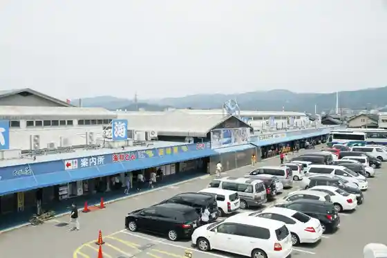
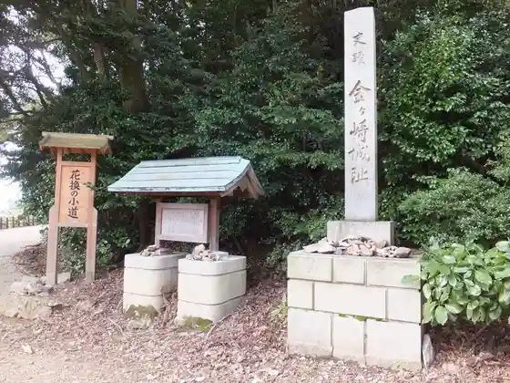

Kani Fakutorii Kora Kumi
Tsuruga, Fukui · Official / source link

Mizushima
Tsuruga, Fukui · 0770-21-8686 · Official / source link

Nihonkai Sakana Machi
Tsuruga, Fukui · 0770-24-3800 · Official / source link

Kingasaki Castle Ruins
Tsuruga, Fukui · 0770-22-0938 · Official / source link

Kehi no Matsubara
Tsuruga, Fukui · 0770-21-8686 · Official / source link
Tsuruga Aka Renga Soko
Tsuruga, Fukui · 0770-47-6612 · Official / source link
Kehi Shrine
Tsuruga, Fukui · 0770-22-0794 · Official / source link
Mariyama Kaiyu Park
Tsuruga, Fukui · 0770-21-8686 · Official / source link
Tsuruga Eki Koryu Shisetsu Oru Park
Tsuruga, Fukui · 0770-20-0689 · Official / source link
Kehi no Matsubara Beach
Tsuruga, Fukui · 0770-21-8686 · Official / source link
Saifuku Tera
Tsuruga, Fukui · 0770-22-3926 · Official / source link
Nyusanpia Tsuruga
Tsuruga, Fukui · 0770-24-2111 · Official / source link
Tsuruga Tetsudo Museum (Kyu Tsuruga Minato Ekisha)
Tsuruga, Fukui · 0770-21-0056 · Official / source link
Matsubara Shrine
Tsuruga, Fukui · Official / source link
Kanezaki Miya
Tsuruga, Fukui · 0770-22-0938 · Official / source link
Mariyama Beach
Tsuruga, Fukui · 0770-21-8686 · Official / source link
Eigen Tera
Tsuruga, Fukui · Official / source link
Takeda Kounsai Honjin Ato (Shimbo Camp Office)
Tsuruga, Fukui · Official / source link
Nakaike Ken Shitchi (Nakaike Ken Nin to Nature no Fureai Village)
Tsuruga, Fukui · 0770-20-1110 · Official / source link
Tsuruga Shieasaikuru
Tsuruga, Fukui · Official / source link
Jindo no Minato Tsuruga Muzeumu
Tsuruga, Fukui · 0770-37-1035 · Official / source link
Shiraki Beach
Tsuruga, Fukui · 0770-21-8686 · Official / source link
Nishiura Coast
Tsuruga, Fukui · 0770-21-8686 · Official / source link
Hon Kachi Tera
Tsuruga, Fukui · Official / source link
Kiramekiminato Kan
Tsuruga, Fukui · 0770-20-1100 · Official / source link
Honmyo Tera
Tsuruga, Fukui · Official / source link
Seimei Shrine
Tsuruga, Fukui · 0770-21-8686 · Official / source link
Itsuhata Beach
Tsuruga, Fukui · 0770-21-8686 · Official / source link
Inoshishigaike
Tsuruga, Fukui · 0770-26-9006 · Official / source link
Tateishi Misaki Lighthouse
Tsuruga, Fukui · 0770-21-8686 · Official / source link
Tayui Beach
Tsuruga, Fukui · 0770-21-8686 · Official / source link
Takanori Tera
Tsuruga, Fukui · 0770-21-8686 · Official / source link
Nosaka Ikoi Forest
Tsuruga, Fukui · 0770-24-0052 · Official / source link
Ei Kaku Tera
Tsuruga, Fukui · Official / source link
Ike Kawauchi Marsh
Tsuruga, Fukui · 0770-21-8686 · Official / source link
Jogu Shrine
Tsuruga, Fukui · 0770-26-1040 · Official / source link
Raigo Tera
Tsuruga, Fukui · Official / source link
Shibata Shi Garden
Tsuruga, Fukui · 0770-21-8686 · Official / source link
Mito Resshi Memorial Museum (Kyu Nishin Kura)
Tsuruga, Fukui · Official / source link
TSURUGA POLT SQUARE (otta)
Tsuruga, Fukui · Official / source link
Nago Beach
Tsuruga, Fukui · 0770-21-8686 · Official / source link
Shimbo Yado Ki no Me Kodo
Tsuruga, Fukui · 0770-21-8686 · Official / source link
Takeda Kounsai Nado Haka
Tsuruga, Fukui · 0770-21-8686 · Official / source link
Minatotsuruga Dashi Hall
Tsuruga, Fukui · 0770-21-5570 · Official / source link
Suzaki no Taka Toro
Tsuruga, Fukui · 0770-21-8686 · Official / source link
Tsuruga Ritsu Museum
Tsuruga, Fukui · 0770-25-7033 · Official / source link
Hiki Dan Castle Ruins
Tsuruga, Fukui · 0770-21-8686 · Official / source link
Tsuruga Eki Norikae Konkosu Tourist Information
Tsuruga, Fukui · Official / source link
Chon Tera
Tsuruga, Fukui · Official / source link
Echizen Coast
Tsuruga, Fukui · 0778-37-1234 · Official / source link
Tsuruga Yakusho
Tsuruga, Fukui · 0770-21-1111 · Official / source link